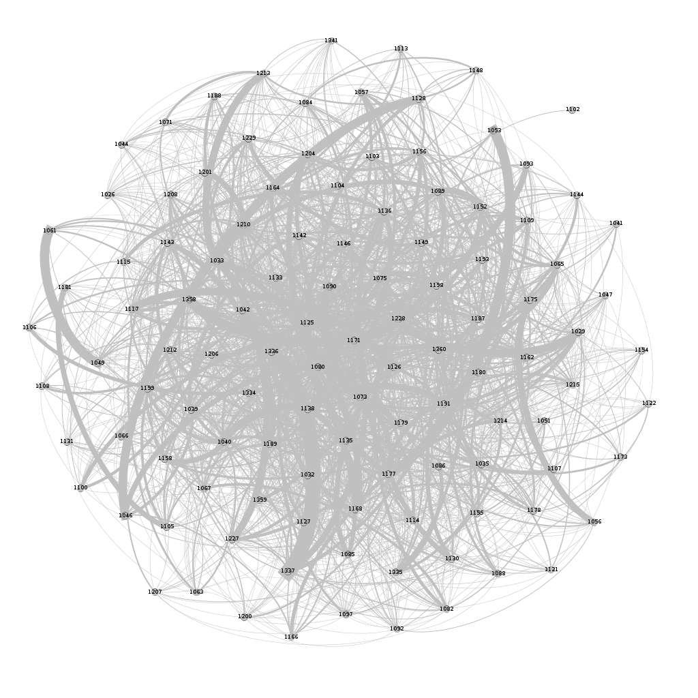
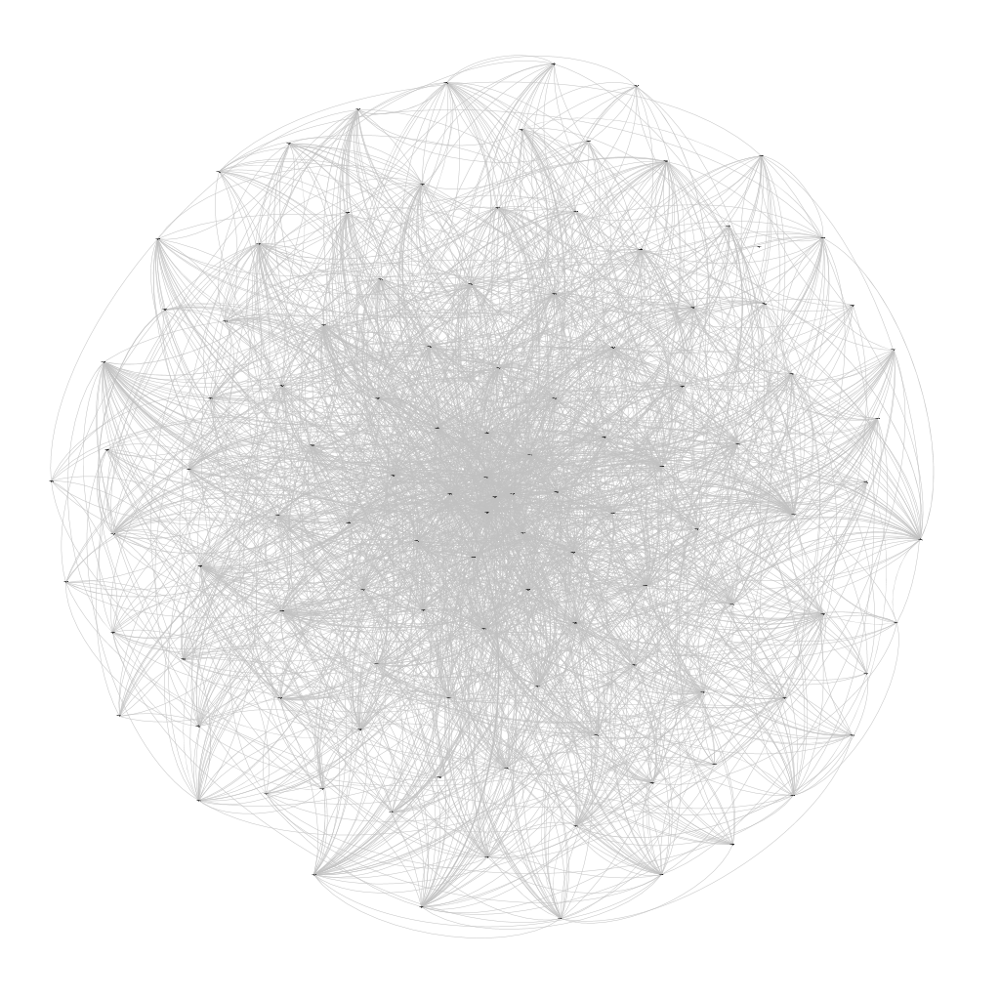
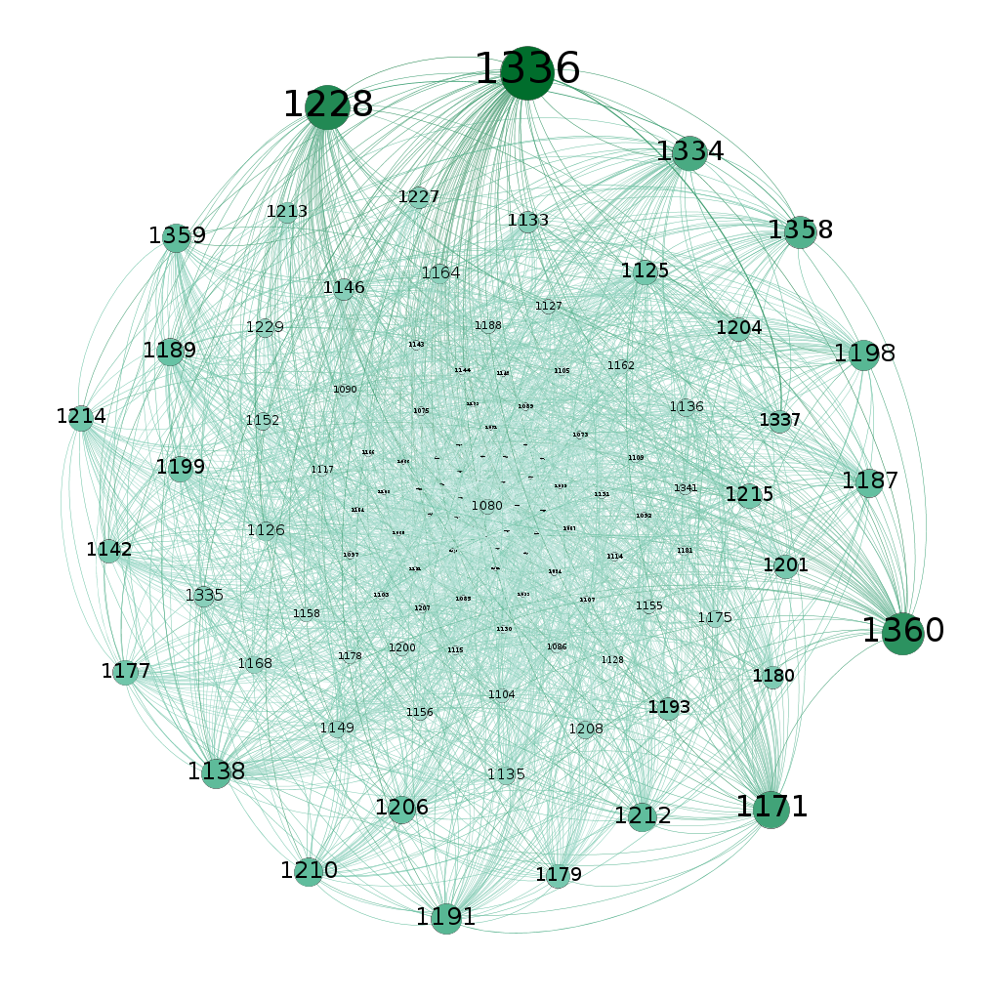
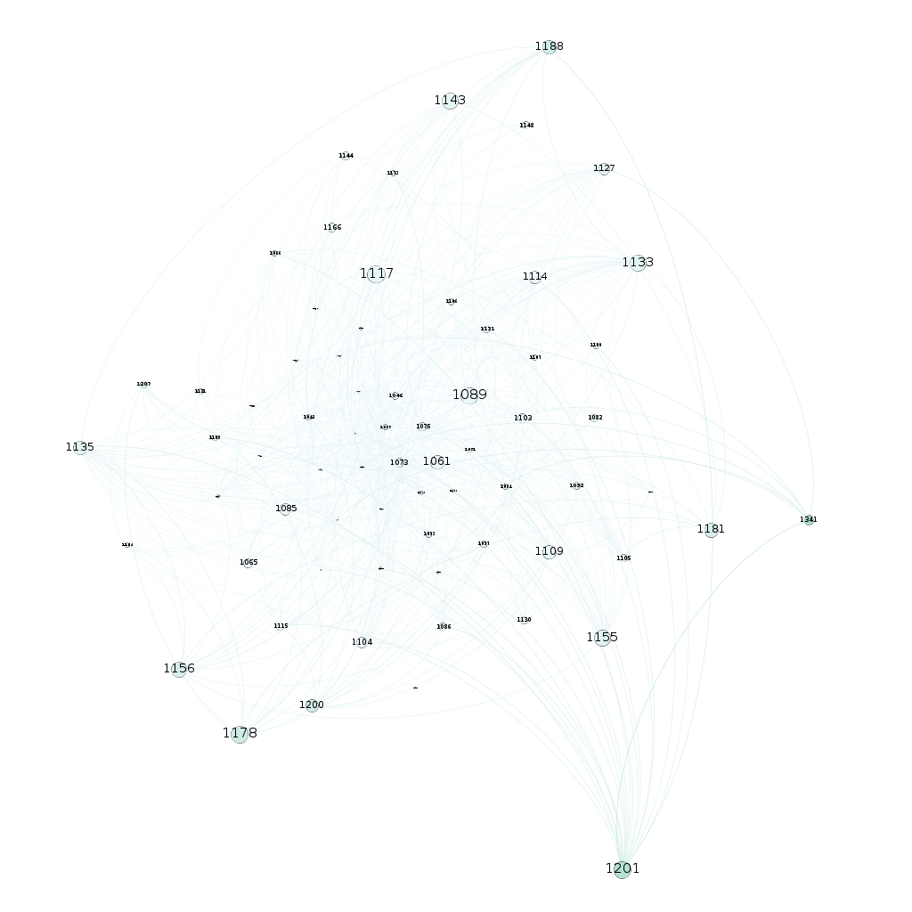

The dataset was collected during the ACM Hypertext 2009 conference. The nodes in the graph are the conference attendees who volunteered to wear radio badges that monitored face-to-face proximity. This network represents the face-to-face proximity of all these attendees who volunteered for 2.5 days. The dataset is of the type "t i j" where 'i' & 'j' are the id's of the persons in contact. 't' is the interval in which the contact was active.
The Calculations required for the questions are in the link attached.
The network is directed graph with 113 nodes and 2163 edges. The graph is initially layed out with Fruchterman Reingold Algorithm so that it gives more spatialization to the graph, but maintained in a given Area. Then the graph is spatialized with a Forced Atlas 2 algorithm to disperse the groups and give space around larger nodes. The sole purpose of using Reingold Algo before Forced Atlas 2 is it's always better to untangle the network before summiting it to a strong-force algorithm.
 The graph in the left is after Reingold algorithm and the final graph in the right is after forced atlas 2 algorithm.
The parameters used for the network are:
The filters applied are:
Many a times networks contains internal subdivisions called communities. In Gephi,we can highlight these communities using the Modularity option in the statistics Tab. The resolution has to be choosen to convert the graph into number of modularities. The lower the resolution the more the number of modularity classes. The higher the resolution the less the number of modularities.
Yes , there is modularities in the graph. The Above images show the modularity classes. The above graph is created by selecting modularity class and running the layout again so as to prevent overlap of the nodes and arrange the nodes well. The plot on the left is labelled with the node numbers and the image on the right is without node labelling .
Generally, degree centrality is defined as the number of nodes connected to it. Based on the degree centrality i.e., the number of neighbors of the node can be defined. The average weighted degree centrality is 82.32
Since, here our network is a directed graph the degree centrality has 2 versions: in-degree and out-degree. In-degree centrality is defined as the number of incoming links which are given by the neighboring nodes. Out-degree centrality is defined as the number of outgoing nodes, typically these are determined by the node itself. Here, we are interested in In-degree centrality case because if the in-degree is high implies there are many other nodes that link to it which further implies the specific node is important. The average weighted in-degree centrality is 41.16 . The right figure shows the nodes which are below the average value of in-degree centrality.
 Betweenness centrality is another important measure in a network. As we have seen the degree centrality shows the number of connections a node has, the betweenness centrality shows how often the specific node has appeared on the shortest path between any 2 randomly chosen nodes in the network. So, this metric is very important because for calculating the betweeness centrality of a given node the whole network is taken into consideration.
The importance of this metric is that suppose a node has high degree centrality and low betweenness centrality then it defines that the node is densely connected in the network but these nodes do not form very crucial links in the network. Whereas nodes with low degree centrality and high betweenness centrality are very sparsely connected but then these connections are the crucial connections for the network.
The above graph shows that the node 1080 is the node present in which is present mostly in shortest paths connecting different nodes.
Eigenvector centrality is a measure of the importance of the nodes for the connectivity in the network. Let's say the importance of each node is centrality score. And also we want the centrality score to be proportional to the sum of scores of all nodes which are connected to it. So, in this way if a node is connected to many important nodes then we consider that node also to be an important node. Similarly, the node is not so important if it is connected to not many important nodes.
From the above visualizations we can observe the fact that the different nodes have different Degree, In-degree centrality, betweenness centrality, EigenVector Centrality. For example, Node 1125, 1080, 1171 has high degree but Nodes 1228, 1336, 1360 has high in-degree centrality.
Similarly, the nodes 1080, 1138, 1171, 1126 indicates that these are the nodes which are very frequently appeared in the shortest paths. But in contrary though they appear frequently they are not the most important nodes. We can see from eigenvector centrality that the nodes 1336, 1360, 1359 are the most important nodes though they don't frequently appear in the shortest path.